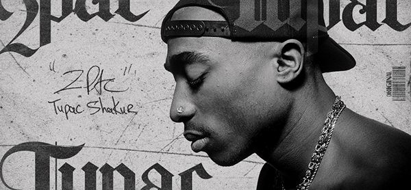

O Legado Eterno de 2Pac
Mais do que um ícone do rap, Tupac Shakur foi uma força cultural que moldou gerações. Com palavras afiadas, espírito rebelde e uma alma visionária, Pac rompeu barreiras e deu voz aos marginalizados. Seu legado atravessa décadas — nas ruas, nos palcos, nas telas e nos corações.
